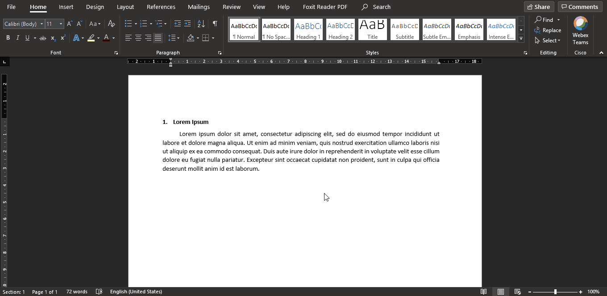

Sering ditemukan adanya kasus copy-paste, atau dikenal dengan istilah plagiarisme. Copy-paste paling umum terjadi pada Bab II. Hal ini melanggar etika dan tidak dapat dibenarkan. Untuk itu, instead of copy-paste, tulis kalimat menggunakan kata-kata sendiri (parafrasa) dan sertakan sumber yang dirujuk (rujukan/sitasi).
Sering ditemui kata atau ejaan "gagal move on". Misalnya:
Beberapa orang memiliki kebiasaan menulis/mengetik pada MS Word dengan menambahkan spasi ketika menulis bentuk ulang, misalnya menulis kata macam-macam:
macam(spasi)-(spasi)macam
Karena hal tersebut, tanda hubung atau dash (-) akan mengalami auto correction menjadi tanda pisah atau em dash (—). Biasanya, tulisan akan menjadi macam — macam. Hal ini tidak sesuai, karena untuk menulis bentuk ulang seharusnya menggunakan tanda hubung, bukan tanda pisah. Untuk itu, hindari menggunakan spasi ketika menulis bentuk ulang.
Diantaranya atau di antaranya? Kemana atau ke mana? Dilakukan atau di lakukan? Kedua atau ke dua? Manakah yang benar?
Untuk menjawab pertanyaan tersebut, mari ingat-ingat kembali pelajaran Bahasa Indonesia yang diajarkan di sekolah dasar.
Awalan adalah bagian dari imbuhan yang dapat memodifikasi bentuk kata dasar. Kata di dan ke merupakan bagian dari awalan. Kata di berfungsi untuk membetuk kata kerja dan menyatakan bentuk pasif. Sedangkan kata ke berfungsi untuk membentuk kata bilangan tingkat, kata bilangan kumpulan, kata benda, dan kata kerja. Ketika kedua kata tersebut digunakan sebagai awalan, maka penulisannya disambung dengan kata dasar.
Kata depan atau preposisi digunakan untuk merangkaikan kata-kata atau bagian kalimat. Ketika digunakan sebagai kata depan, di dan ke ditulis terpisah. Kata depan di dan ke digunakan untuk menunjukkan tempat, posisi, atau waktu.
Pada umumnya, kata di dan ke sebagai kata depan jika diikuti oleh nama tempat, posisi, atau kata yang menunjukkan waktu. Jadi, penulisan yang benar adalah di antaranya (posisi) dan ke mana (tempat/tujuan). Awalan di digunakan untuk membentuk kata kerja. Jadi, penulisan yang benar adalah dilakukan, bukan di lakukan. Karena kata lakukan tidak menunjukkan tempat, posisi, atau kata yang menunjukkan waktu. Untuk memastikan hal ini, bisa juga dengan mencoba mengubah bentuk di (pasif) menjadi bentuk me (aktif). Jika dilapangan bukan merupakan bentuk pasif dari melapangan (yang bahkan bukan kata kerja), maka bisa dipastikan di pada kata di lapangan menunjukkan tempat, merupakan kata depan, dan ditulis terpisah. Sedangkan untuk awalan ke, penulisan yang benar adalah kedua. Awalan ke pada kata kedua membentuk kata bilangan tingkat dan tidak diikuti oleh keterangan tempat, posisi, atau kata yang menunjukkan waktu. Sehingga, penulisan ke dengan dua disambung menjadi kedua.
Partikel penegas digunakan untuk menampilkan unsur yang diiringinya. Partikel penegas terdiri dari -kah, -lah, -tah, dan -pun. Penulisan partikel ini disambung dengan kata yang diikutinya kecuali partikel pun. Kesalahan ini sering ditemui, yaitu penulisan partikel pun yang disambung. Sehingga, penulisan partikel pun yang benar adalah apa pun, susah sekali pun, paling terakhir pun. Namun, partikel pun juga dapat digunakan sebagai unsur kata penghubung dan ditulis secara tersambung. Misalnya meskipun, walaupun, adapun, dan bagaimanapun.
Gabungan kata atau kata majemuk sering ditulis tersambung. Padahal, gabungan kata yang ditulis tersambung adalah gabungan kata yang memiliki awalan dan akhiran. Kesalahan umum yang terjadi contohnya adalah penulisan terimakasih, orangtua, matakuliah, dan lain sebagainya. Penulisan yang benar untuk gabungan kata tanpa awalan dan akhiran adalah dipisah. Jadi, penulisan yang benar adalah terima kasih, orang tua, dan mata kuliah. Aturan ini juga berlaku untuk gabungan kata yang hanya memiliki awalan atau akhiran. Misalnya berterima kasih, bertepuk tangan, dan lain sebagainya. Gabungan kata ditulis tersambung ketika mendapatkan awalan dan akhiran sekaligus. Misalnya pertanggungjawaban, menyebarluaskan, dan lain sebagainya. Namun, ada beberapa gabungan kata yang sudah padu, tanpa awalan dan akhiran, namun tetap ditulis tersambung. Daftar gabungan kata tersebut dapat dicek di sini.
Kesalahan penggunaan huruf kapital termasuk kesalahan yang sering ditemukan pada tulisan, khususnya laporan TA. Huruf kapital terkadang digunakan untuk mengawali kata random dan tidak berdasar. Misalnya, "Secara umum, Halaman tersebut digunakan untuk menampilkan Data Mahasiswa". Kata halaman, data, dan mahasiswa tidak seharusnya diawali dengan huruf kapital. Berikut adalah kesalahan umum penggunaan huruf kapital yang dibagi menjadi dua kategori:
Penyebutan nama jenis atau satuan ukuran, sering ditulis menggunakan awalan huruf kapital. Misalnya guru, mahasiswa, dosen, dan lain sebagainya. Contoh, "Pada saat perkuliahan berlangsung, beberapa Mahasiswa tidak memperhatikan apa yang dijelaskan oleh Dosen". Seharusnya adalah, "Pada saat perkuliahan berlangsung, beberapa mahasiswa tidak memperhatikan apa yang dijelaskan oleh dosen".
Kesalahan paling sering terjadi pada kategori ini adalah penulisan nama. Paling umum adalah nama produk, software, atau metode. Contoh kesalahan adalah android, google, dan adobe photoshop. Padahal, ketiga kata tersebut adalah nama produk (software). Seharusnya, penulisan yang benar adalah Android, Google, dan Adobe Photoshop (tanpa dicetak miring karena kata tersebut merupakan nama, bukan istilah asing).
Huruf miring digunakan untuk menulis istilah asing, menulis judul teks yang dikutip dalam tulisan, dan untuk menegaskan atau menekankan huruf/bagian kata/kata/kelompok kata dalam kalimat. Berikut adalah kesalahan umum penggunaan huruf miring yang dibagi menjadi dua kategori:
Penulisan nama yang bukan merupakan bahasa Indonesia biasanya ditulis miring. Contohnya adalah Adobe Photoshop, Google maps, Los Angeles Fire Department (LAFD), dan lain sebagainya. Seharusnya, penulisan nama tidak dicetak miring termasuk singkatannya, hanya diawali dengan huruf kapital pada setiap kata/nama. Jadi, penulisan yang benar adalah Adobe Photoshop, Google Maps, dan Los Angeles Fire Department (LAFD). Selain itu, penulisan singkatan walaupun kepanjangannya menggunakan bahasa asing, seharusnya tidak dicetak miring. Misalnya Hypertext Markup Language (HTML).
Penggunaan istilah asing biasanya luput dari hal ini. Kesalahan ini sering terjadi, yaitu kata/istilah asing yang tidak dicetak miring. Istilah asing tidak hanya istilah bahasa Inggris, tapi bisa juga bahasa daerah seperti bahasa Bali, Jawa, Sasak, dan lain sebagainya. Selain itu, penulisan judul tulisan ketika dirujuk juga luput dari hal ini. Misalnya, "Menurut penelitian yang berjudul Analisis Perancangan Perangkat Lunak oleh Mr. X", seharusnya penyebutan judul ditulis miring sehingga menjadi "Menurut penelitian yang berjudul Analisis Perancangan Perangkat Lunak oleh Mr. X".
Terdapat dua kesalahan yang paling umum dalam hal membuat sitasi dan daftar pustaka, yaitu:
Teks, tabel, gambar, atau komponen lain terkadang dibuat di luar area penulisan. Aktifkan text boundaries pada MS Word untuk menampilkan boundary atau batas area penulisan. Hal ini bermanfaat agar komponen tulisan tidak melewati batas. Dengan mengaktifkan ini, kita juga bisa mengetahui dengan mudah jika masih terdapat space before atau after.
